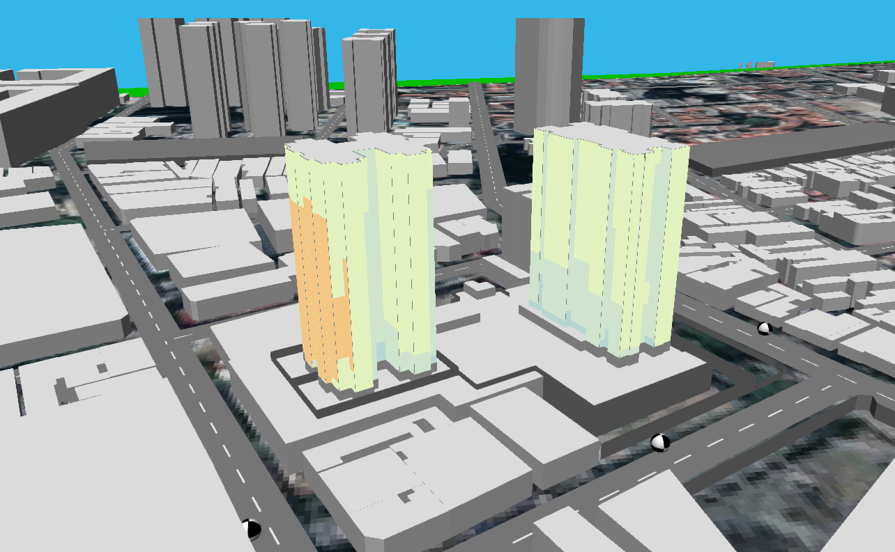
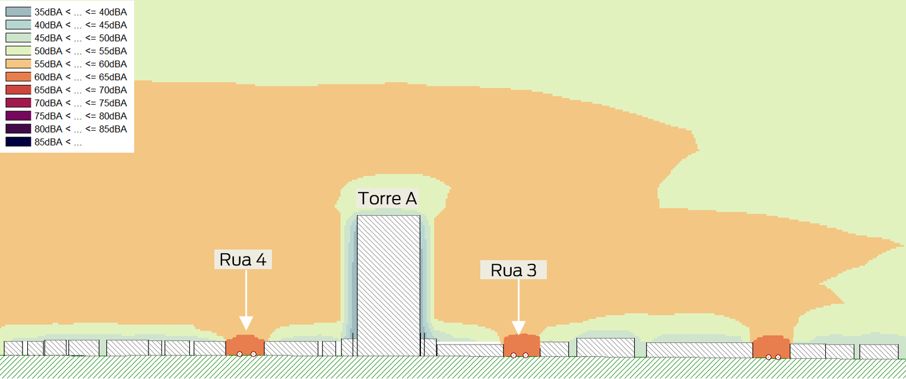
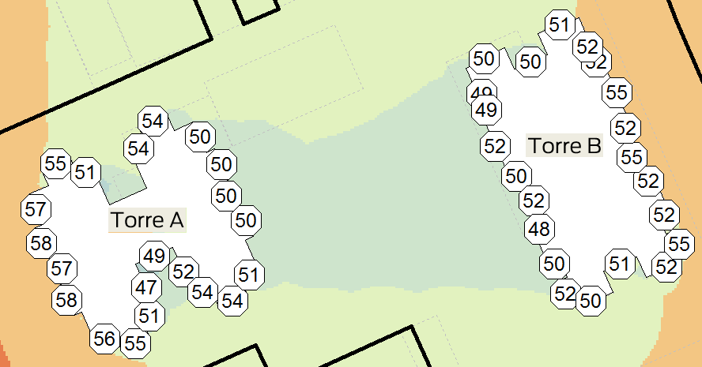
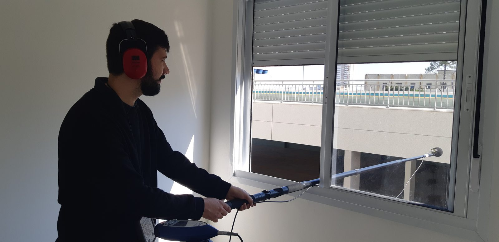
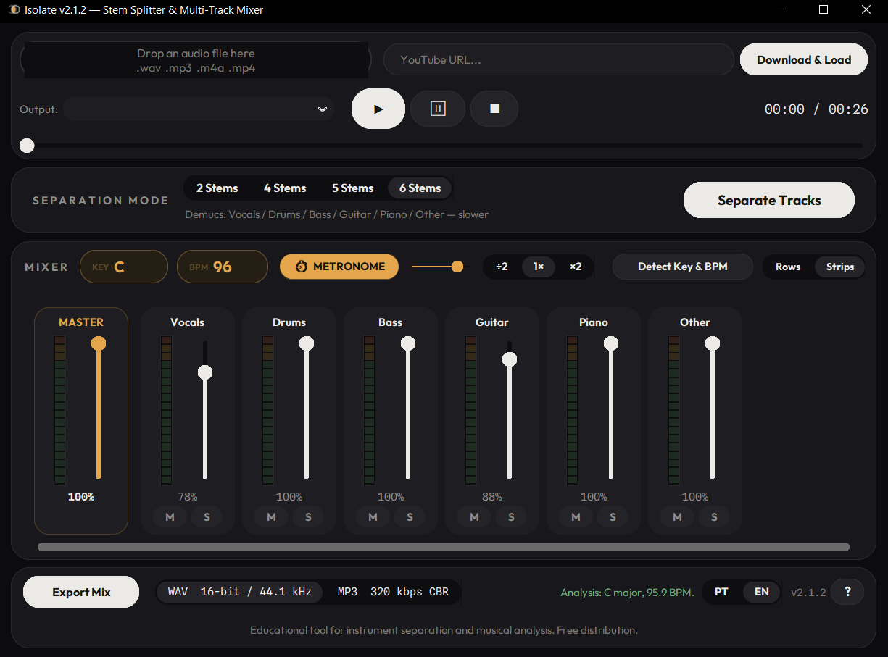
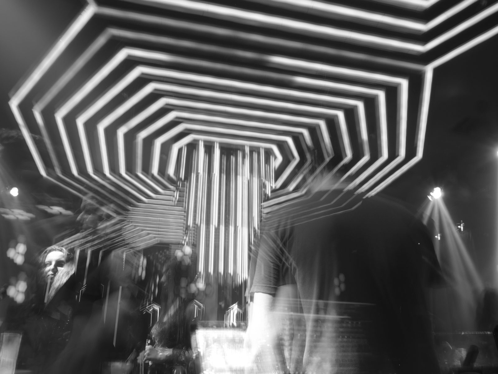

01 · BIOGRAFIA
Moisés Canabarro é engenheiro acústico formado pela UFSM, mestrando em simulação de acústica de salas (PPGECAM/UFSM). Em mais de 8 anos, atuou nas principais consultorias de acústica do Brasil — Harmonia Acústica, Giner Acústica e Ca2 Consultores — com acústica de salas (ISO 3382), acústica de edificações e isolamento sonoro (ABNT NBR 15575), medições em campo e predição de desempenho com SONarchitect, Insul e Cadna A, além de ferramentas próprias em Python. A MC Engenharia Acústica é a prática que nasce dessa experiência acumulada.
02 · TRAJETÓRIA
A MC Engenharia Acústica é o resultado desse caminho: mais de 8 anos de projetos, medições e simulações reunidos agora sob uma marca própria.
03 · SERVIÇOS
04 · CASE
Predição de ruído ambiental e desempenho de fachadas com SONarchitect, Insul e Cadna A — modelos 3D calibrados por medições.



05 · CASE
Ensaios in loco de isolamento aéreo, de impacto e de fachada conforme NBR 15575 / ISO 16283, com sonômetro classe 1.

06 · DESTAQUE
App próprio de separação de fontes: isola voz, bateria, baixo e outros instrumentos de qualquer áudio, com detecção de tom e BPM. Ferramenta educacional, distribuição gratuita.

07 · DESTAQUE
Mais de quatro anos de lighting design na cena noturna, em dois períodos (2016–2018 e 2024–hoje) — sensibilidade de palco e espetáculo que alimenta o olhar técnico sobre espaços de música ao vivo.

MOON NIGHTLIFE · 2016–hoje · 4+ anos
08 · CONTATO
MC ENGENHARIA ACÚSTICA · 2026